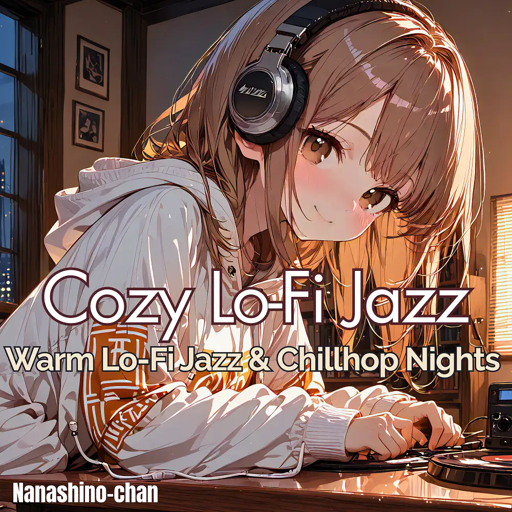

Lo-Fi · Jazz · Chillhop
Cozy Lo-Fi Jazz: Warm Lo-Fi Jazz & Chillhop Nights
Nanashino-chan
Explore Cozy Lo-Fi Jazz: Warm Lo-Fi Jazz & Chillhop Nights by Nanashino-chan: 26 instrumental tracks spanning Lo-Fi / Jazz / Chillhop. Start with Night Lights in the City / Gentle Sax & Coffee Time, preview the collection and find your favorites on streaming services.
2025-09-19 · Released · 26 tracks · Instrumental
Preview the album
The jacket stays here until you choose a track. Playback uses YouTube.
YOUTUBE PREVIEW
Choose a track to listen
The jacket stays here until you choose a track. Playback uses YouTube.
If playback is unavailable, open the album or track on the streaming service.
Find this album on streaming services
Links marked “search” open search results. Select the album or track on the service.
Track list 26
- 01Night Lights in the City
- 02Gentle Sax & Coffee Time
- 03Velvet Evening Drive
- 04Rooftop Chill in the Rain
- 05Midnight Espresso Groove
- 06Neon Crosswalk Reflections
- 07Cloudy Afternoon Stroll
- 08Smooth Sax on the Corner
- 09Deep Bass Reverie
- 10Golden Hour Glow
- 11Late-Night Street Vibes
- 12Jazz in the Record Store
- 13Coffee & Conversations
- 14.Slow Train Downtown
- 15Amber Horizon Lights
- 16Moonlit Balcony Scene
- 17Old Vinyl Memories
- 18Hidden Jazz Bar
- 19Last Sip Before Dawn
- 20Quiet Echoes of the Nigh
- 21Starry Reflections
- 22In the Breeze
- 23Lantern Glow Evening
- 24Floating Fireflies
- 25Calm Before Sunrise
- 26Goodnight, Lo-Fi Jazz
Find a sound for your next post
Copy “Nanashino-chan + track title” and paste it into your social app’s music search. Availability depends on your region and account. Copying the name does not grant usage rights.